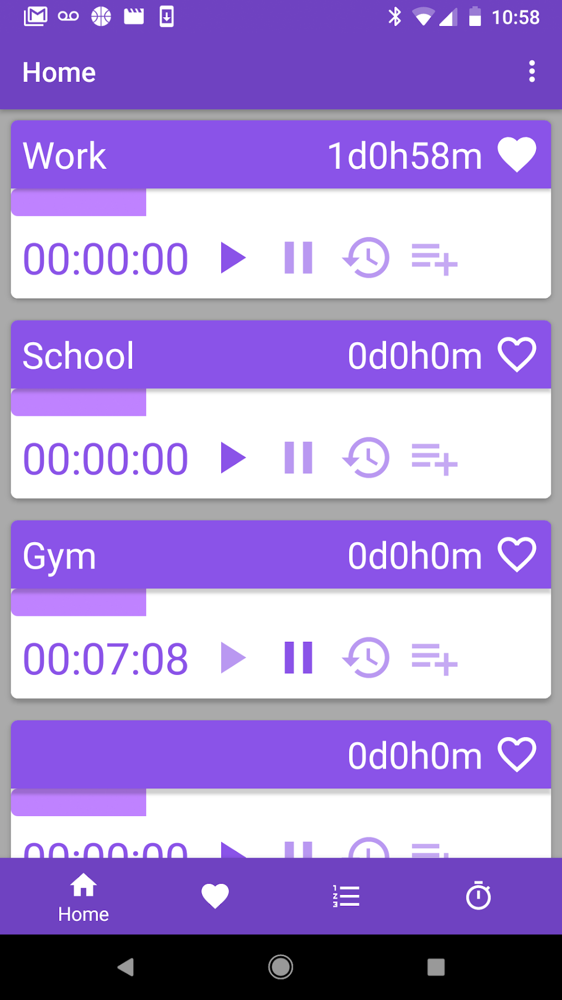
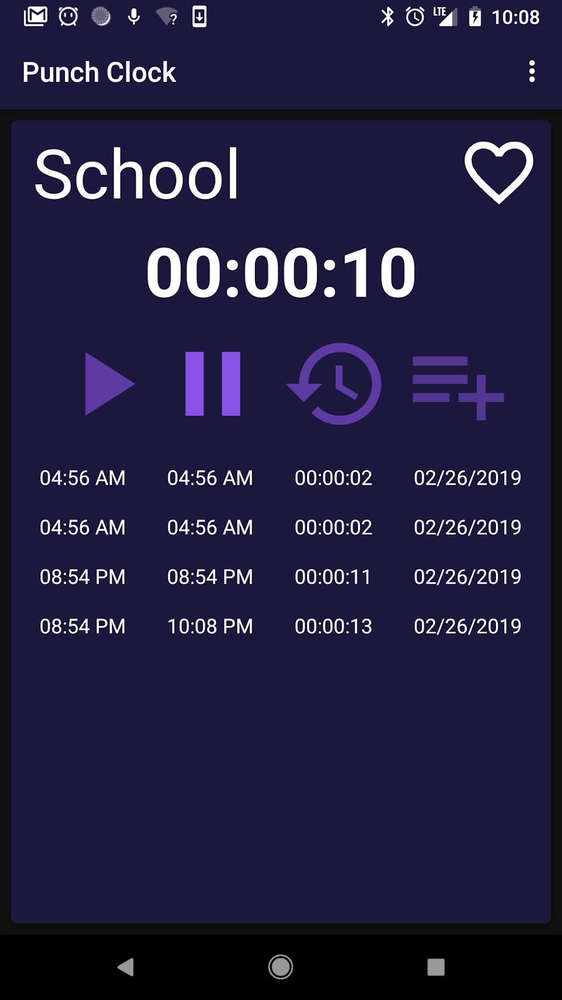
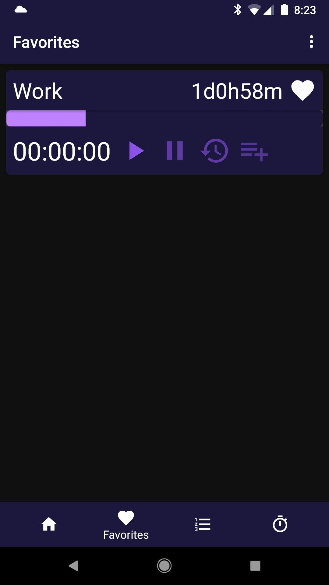
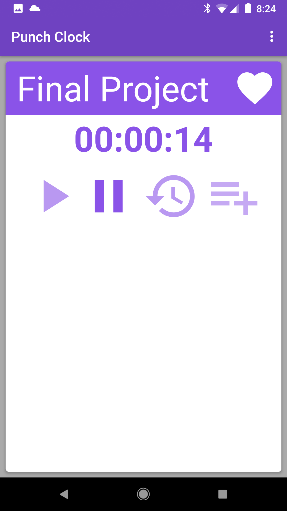
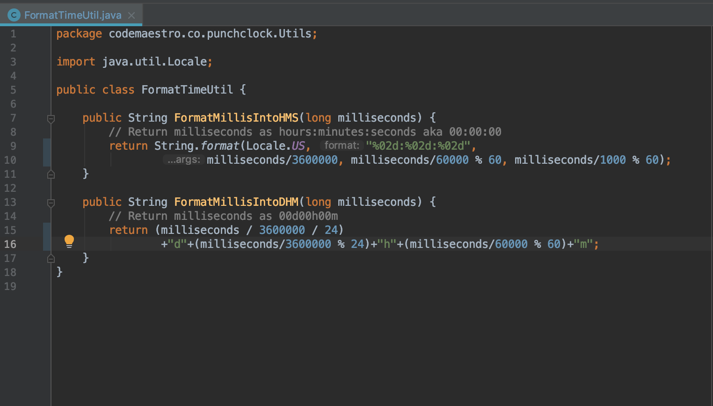

Punch Clock is a fully functioning time keeping app created by me and my friend, Mitch Greene. The app allows you to make categories in which the user can then enter time entries into. Common uses would be to help keep track of your work hours or to see your progress at the gym. Working on this app expanded my knowledge of Java and Android programming immensely.





FormatTimeUtil.java is a simple Java class I made for formatting numbers into a one of two different formats for displaying time. It has two methods, one for converting a long value into the format of "hh:mm:ss" and another for "00d00h00m". This class was used to format the display of the total time entered into a category and various instances of timers.